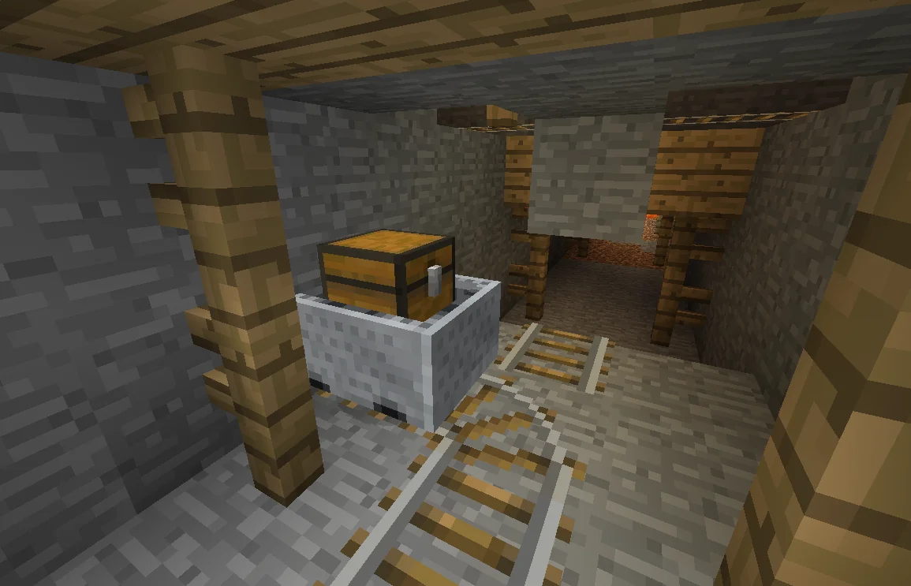
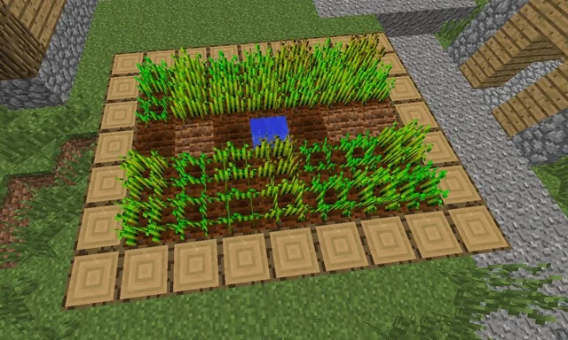
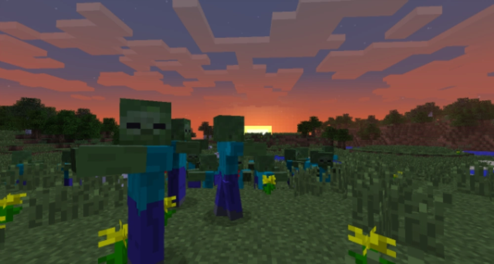

World
A world or level is an individual Minecraft "universe" which encompasses all blocks and entities in each dimension. Worlds can be accessed and edited through the world selection menu from the main menu and can be created with the "Create New World" button.
Biomes
| Biome name | Description | Screenshoot |
|---|---|---|
| Shrubland | The shrublands are largely identical to the savanna biome, featuring few trees and no tall grass. Along with swampland, it is one of the smallest biomes in the game, rarely being larger than a few chunks. |  |
| Rainforest | Rainforests were lush, wet biomes with many trees, which had a 1 in 3 chance of being large trees, instead of 1 in 10 like all other biomes. They were similar to forests but had a large amount of tall grass and ferns and lush green grass due to temperature and rainfall requirements. |  |
| Flat Plains | Flat Plains are large variants from the classic plains biome, with some minor diferential details: they are like the name say more plains, apearing near beaches, without any flowers only grass and some pumpkins. |  |
Moon
The moon is a celestial body that appears in the night sky in the Overworld, this datapack adds new states to this moon, from now there's a total of 3 different states all wich when are present changes the whole world:
Twilight Moon
The Twilight Moon gives you luck making, increasing the loot quality in drops and chests!


New Moon
The New moon are a lunar event which makes the crops grow much faster!
Breaking Down Moon
The Breaking Down Moon is a lunar event that makes the monsters increasingly stronger and more dangerous! Besides that the player can't sleep in that night!
